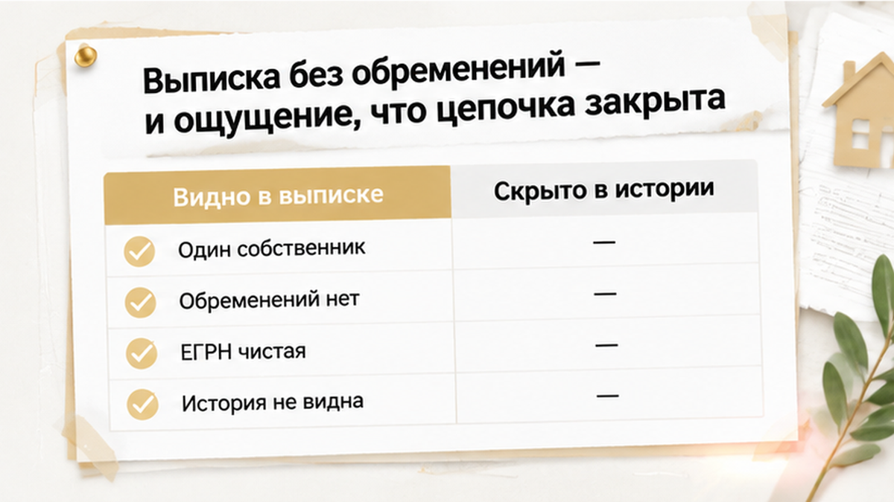
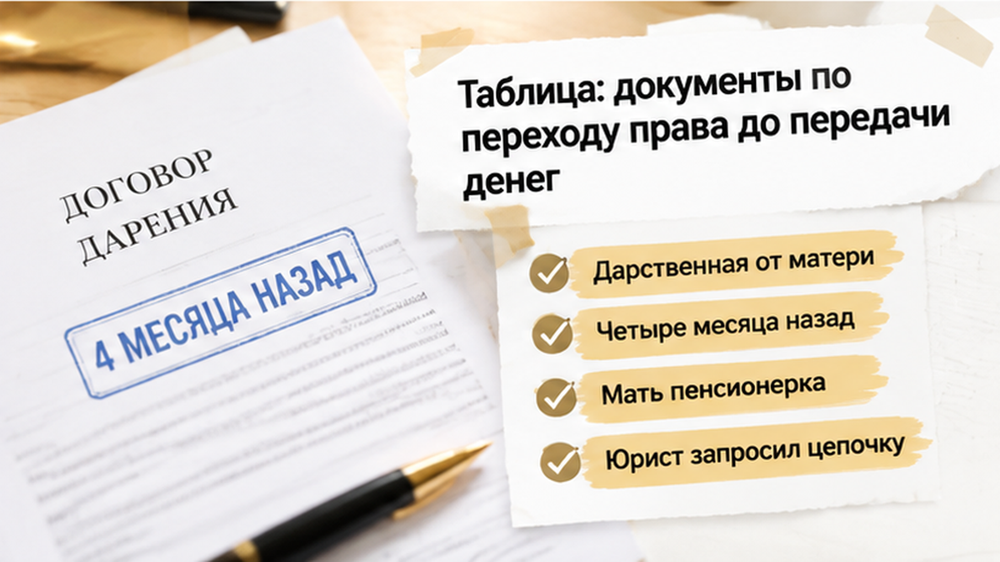
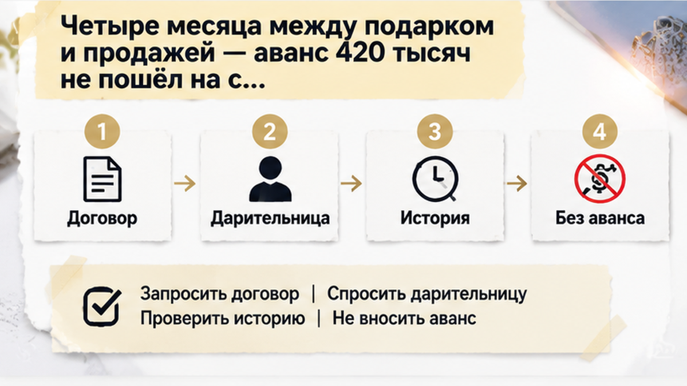
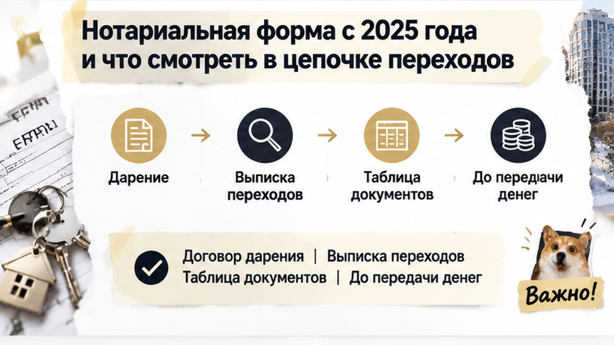

До аванса в 420 000 ₽ оставалась ровно неделя, когда в истории тюменской двушки нашли дарственную, из-за которой сделку остановили. Ипотека у покупателей уже была одобрена, торг закрыт, проект соглашения лежал на столе — казалось, деньги оставалось только передать продавцу. Я часто вижу, как на этом этапе покупатель смотрит прежде всего на решение банка и свежую выписку, хотя они отвечают лишь на часть вопросов. Здесь юрист спросил, как квартира попала к нынешнему владельцу, и прежняя уверенность закончилась раньше, чем был внесён аванс. Семья выбрала паузу: сначала разобраться в документах и обстоятельствах перехода права, потом возвращаться к срокам сделки.
Разбираю такие истории до того, как деньги уходят продавцу. Если у вас похожая ситуация перед авансом, напишите мне:
У покупателей уже было то самое ощущение, когда квартира почти стала своей: двушку выбрали, цену зафиксировали, банк одобрил ипотеку. Оставалось внести аванс, подписать договор купли-продажи и передать документы на регистрацию.
Сроки подталкивали ещё сильнее. В тюменских новостях обсуждали изменение условий семейной ипотеки с 1 октября 2026 года, и семья считала дни. Дополнительная проверка казалась опасной: продавец мог не захотеть ждать, покупатели — не успеть оформить кредит на прежних условиях. Однако скорость сделки не заменяет её безопасность.
Банк проверяет заёмщика и принимает решение, давать ли ему деньги. Одобрение ипотеки не объясняет, почему нынешний собственник получил квартиру и не появится ли позже человек, который захочет оспорить этот переход. Для покупателя это два разных маршрута проверки — финансовый и документальный.
Свежая выписка ЕГРН выглядела спокойно: один собственник, обременений нет, ареста и залога не указано. Для покупателя это почти готовый ответ — квартира чистая, можно двигаться дальше. Но выписка показывает состояние права сейчас, а не всю историю его возникновения.
ЕГРН сообщает, кто владеет квартирой и какие ограничения указаны на дату выдачи. Строка «обременений нет» не объясняет, почему человек стал собственником, как давно это произошло и какие документы стояли за переходом. В сделках со вторичкой именно этот промежуток иногда требует отдельного внимания.
Я уже разбирал похожую ошибку в другой истории: за три дня до аванса в Тюмени всплыл долг за свет в 186 тысяч. Там реестр не показал проблему с платежами. Здесь вопрос оказался в основании права — в обоих случаях одной выписки для решения о деньгах оказалось мало.

Юрист покупателей запросил правоустанавливающие документы и историю переходов. Тогда выяснилось, что примерно четыре месяца назад квартиру передали сыну по договору дарения, а теперь он выставил жильё на продажу. Само по себе дарение между родными не делает сделку плохой — значение имела вся связка обстоятельств.
Здесь совпали три детали: свежий переход, пожилой даритель и спешка с авансом. В такой связке я не советую ограничиваться выпиской ЕГРН: нужно изучить договор дарения, документы прежнего собственника и обстоятельства перехода до того, как деньги окажутся у продавца.
Похожий сюжет уже возникал в истории, где квартиру подарили дочери за 48 часов до торгов. Там остановиться пришлось не из-за самого родства, а из-за вопросов, на которые не успели получить ответы.

На кухне у покупателей лежали выписка, график ипотечных платежей и черновик соглашения — в нём стояла сумма аванса 420 000 ₽. До встречи с продавцом оставалась неделя. После проверки остались вопросы: понимала ли дарительница значение сделки, как оформлялся договор, не найдутся ли люди, которые позже заявят о своих правах? Само по себе это ещё не ответ «сделка опасна», но для передачи денег вопросов было слишком много.
Семья решила не вносить аванс и не подписывать договор, пока продавец не покажет полный пакет документов. Ему объяснили спокойно: речь не о недоверии, а о порядке проверки. Один из супругов опасался не успеть из-за изменений условий семейной ипотеки, которые обсуждались в Тюмени перед 1 октября 2026 года. Другой напоминал: ипотечный дедлайн не исправит ситуацию, если деньги уже уйдут.
Они выбрали паузу: аванс не внесли, договор не подписали, сделку остановили до проверки документов и обстоятельств перехода.
С 13 января 2025 года договор дарения недвижимости между гражданами должен быть удостоверен нотариусом. Исключения для близких родственников нет — это следует из 459-ФЗ и статьи 574 ГК РФ.
Первый вопрос к недавнему дарению практический: есть ли сам договор, нотариальное удостоверение, дата и реквизиты нотариуса. Затем сведения из договора нужно сверить с выпиской ЕГРН о переходе прав.
Нотариальная форма сама по себе не делает последующую продажу автоматически безопасной. К дарению могут применяться общие основания недействительности сделок — например, если человек не понимал значения своих действий, столкнулся с обманом или давлением. Есть и специальные основания отмены дарения по статье 578 ГК РФ. Подходит ли такое основание к конкретной ситуации, решает суд.
Покупателю не нужно самому выносить юридический вердикт. Его задача — заметить обстоятельства, при которых обычной проверки недостаточно, и не передавать деньги, пока документы не изучены. Нужно запросить договор дарения, документ о прежнем праве и выписку о переходах. Отдельно стоит убедиться, что даритель знает о продаже и понимает её смысл.
Родственная сделка сама по себе ничего не доказывает. Свежий подарок, быстрая перепродажа и давление сроков вместе требуют внимания. В другой истории перед авансом возник вопрос к согласию супруги — сделка остановилась из-за документа, который сначала выглядел формальностью.

Покупатели не стали подменять документы доверием. В такой точке важен не пересказ, а возможность спокойно увидеть бумаги и понять обстоятельства перехода.
Первым делом стоит попросить сам договор дарения с нотариальным удостоверением — дату, данные сторон и реквизиты нотариальной надписи. В договоре я сверяю сведения о сторонах и дату с тем, что видно в регистрационной истории квартиры. Когда документ не показывают и предлагают просто поверить словам, деньги передавать рано.
Нужен и документ, по которому квартира принадлежала дарительнице до передачи сыну. Он позволяет увидеть, откуда объект появился у матери и не было ли перед этим нескольких быстрых переходов. Для покупателя это обычная последовательность проверки, особенно когда между дарением и продажей прошло около четырёх месяцев.
Отдельно я бы выяснил позицию самой дарительницы. Устраивать ей допрос не нужно: важно, знает ли она о продаже и подтверждает ли свою волю передать квартиру сыну. Если встречу постоянно откладывают, ссылаются на спешку или отвечают только через продавца, аванс лучше поставить на паузу.
Стоит выяснить и то, кто ещё из близких родственников может интересоваться квартирой. Само наличие родственников ничего не доказывает, однако фраза «между своими всё нормально» не заменяет проверку. В другой истории родственники остановили продажу пожилого продавца — и там решение принимали не только по выписке.
Если в документах или поведении продавца есть тревожные детали, их не нужно закрывать ради сроков. Покупатель не выносит юридический вердикт — он решает, передавать ли деньги до того, как вопросы сняты.
Если перед авансом обнаружился свежий переход права и продавец торопит, вы бы рискнули деньгами ради ипотечного срока или взяли паузу для полной проверки?
Перед авансом остались вопросы по дарению? Напишите в Telegram или MAX — подскажем, какие документы запросить до передачи денег.

| Что запросить | Зачем это нужно | Когда остановиться |
|---|---|---|
| Договор дарения с нотариальным удостоверением | Проверить основание и форму перехода права после 13 января 2025 года | Договор не показывают или нет реквизитов нотариуса |
| Регистрационная история из реестра | Увидеть даты и последовательность смены собственников | Несколько быстрых переходов подряд |
| Документ, по которому квартира принадлежала дарителю | Понять, откуда объект появился у матери | Историю объясняют только устно |
| Подтверждение позиции дарителя | Убедиться, что даритель знает о продаже | Встречу постоянно откладывают из-за спешки |
| Сведения о близких родственниках | Понять, от кого теоретически могут возникнуть вопросы | Продавец избегает разговора о семье |
| Свежая выписка ЕГРН перед авансом | Проверить, что сведения по квартире не изменились | Предлагают использовать старую выписку |
Эта таблица не делает квартиру безопасной автоматически. Она нужна для другого — чтобы деньги не ушли раньше, чем покупатель поймёт историю перехода права. Если после проверки остаются вопросы по дарению, нужна отдельная юридическая оценка.
В этой тюменской истории аванс не передали, договор купли-продажи не подписали. Семья потеряла время и отложила решение по ипотеке, зато не потеряла деньги. Иногда полезнее всего вовремя поставить сделку на паузу.
Когда перед авансом обнаруживается свежий переход права, сначала разбирают документы по дарению, а уже потом возвращаются к срокам банка. Подключиться к такой проверке лучше до брони и передачи денег — пока у покупателя есть возможность спокойно задавать вопросы и принимать решение.